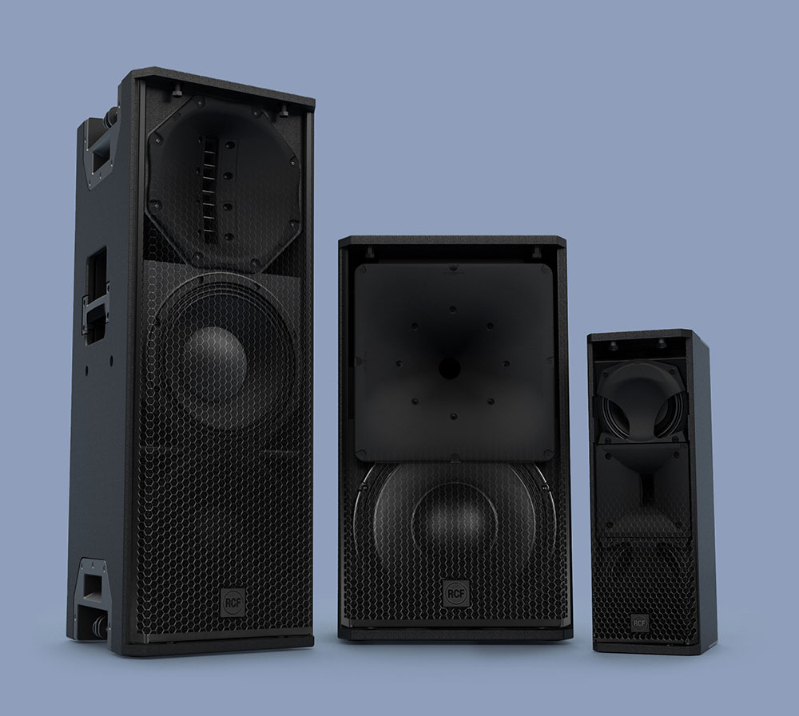
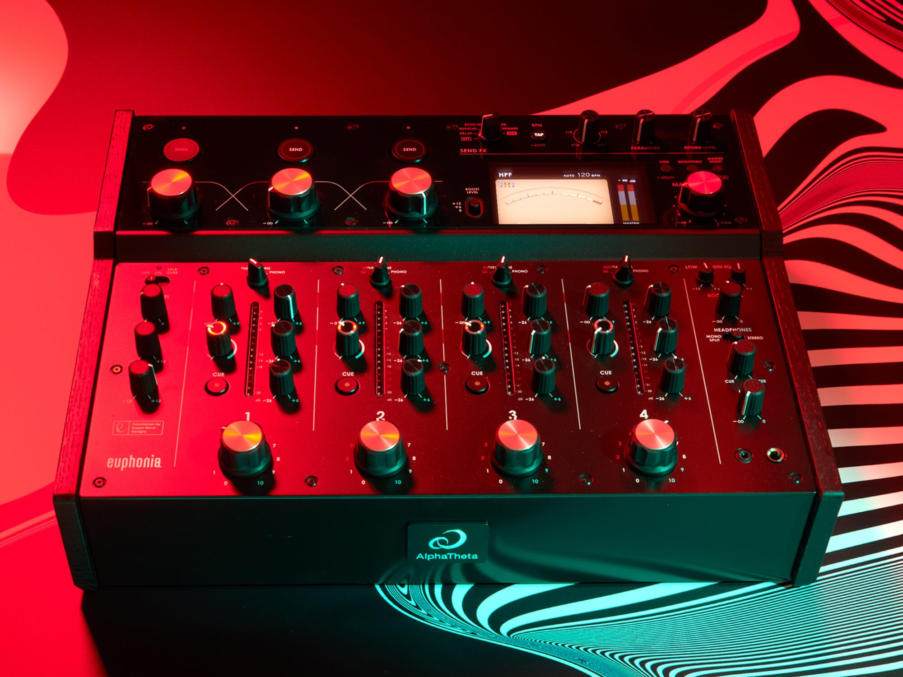
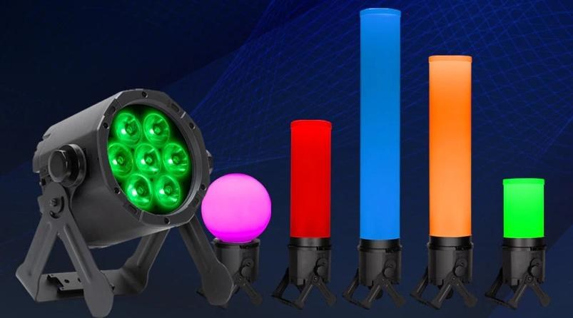
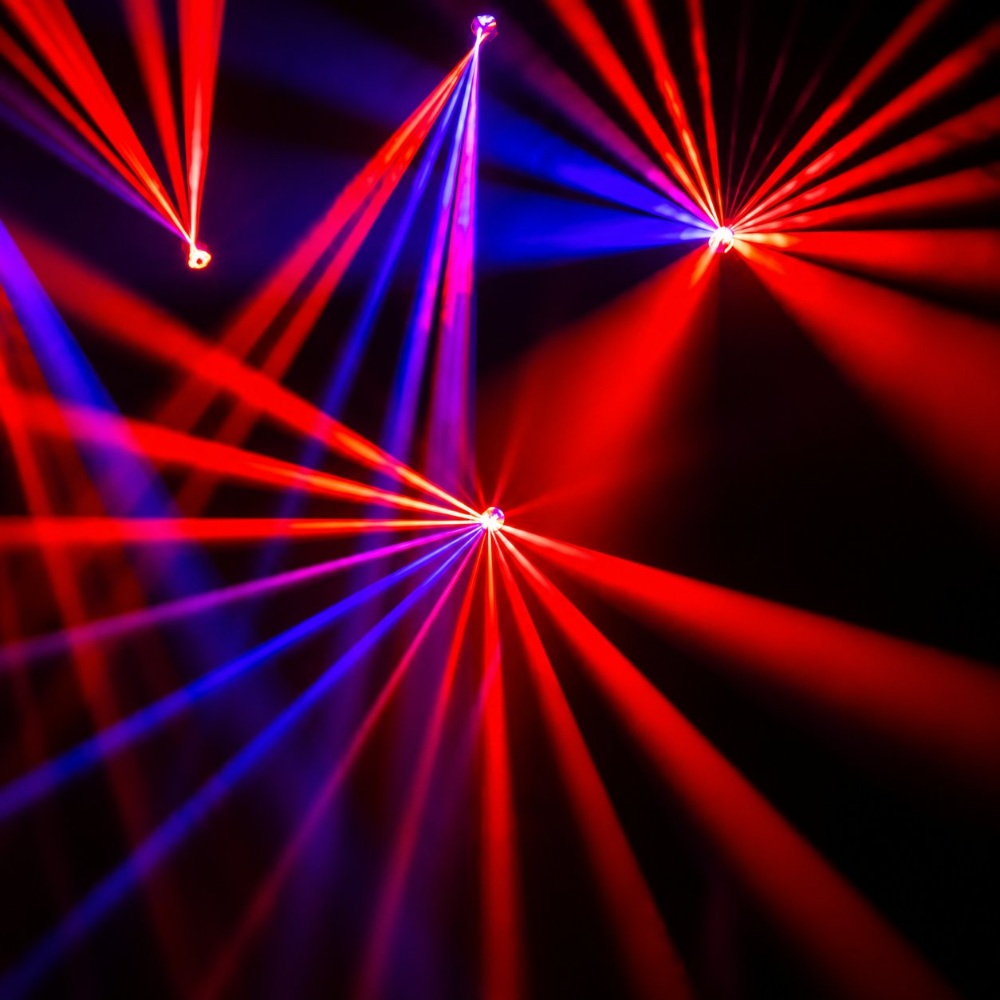
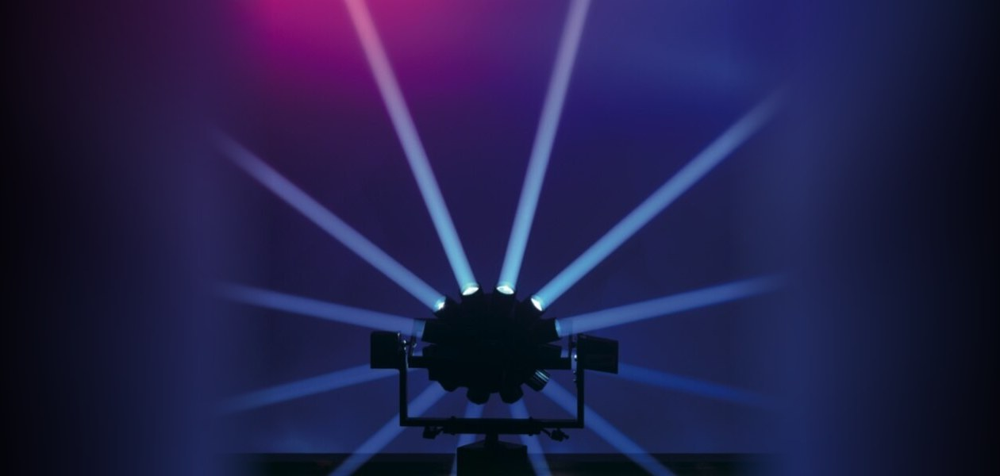
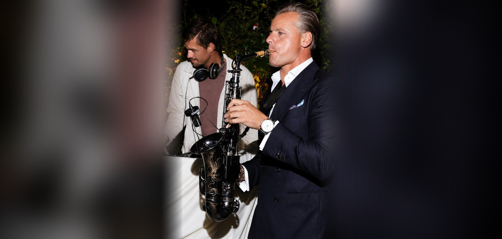
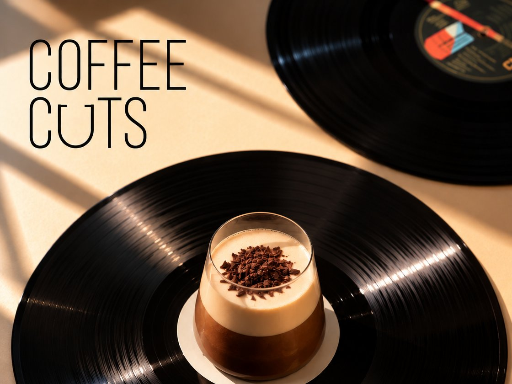
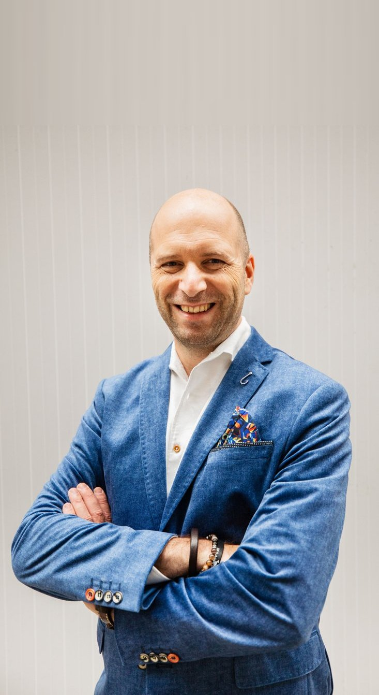
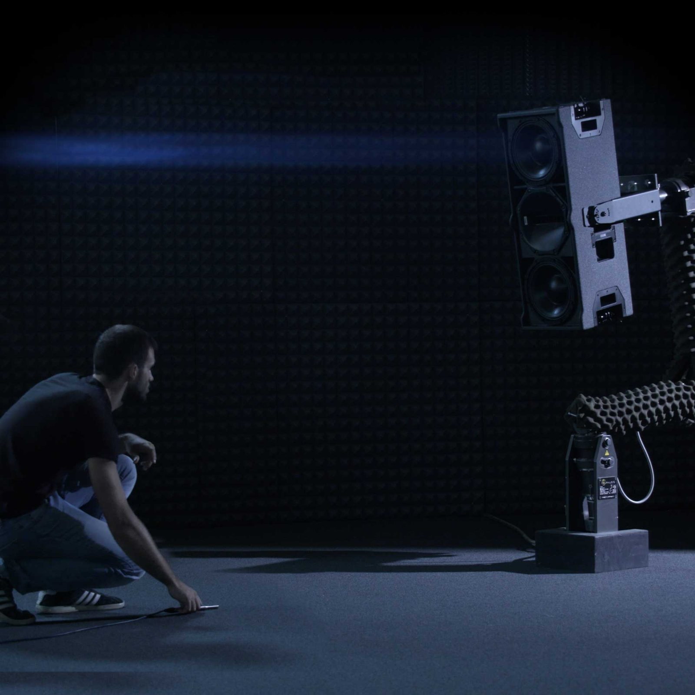

Voorbeeld van het productblok op de homepage. Niet gelinkt.

GeluidRCF KX en Brooklyn Audio
Dj-gearCDJ-3000X, V10, Euphonia, WARM2 en booth
Sfeerlichtaccu-washlights, theaterspots, hazer
Dansvloerlichthybride moving heads en lichtshows
90's vintage lichtAstrodisco en Golden Scan
Dj's en artiestenvocalist, saxofonist, percussionist
Coffee cutsplaylists of een live dj voor je koffiebar of bar
Communicatieadviesboodschap, speeches, uitnodigingen, video
Aankoopadvies licht en geluidmerkonafhankelijk, voor venues